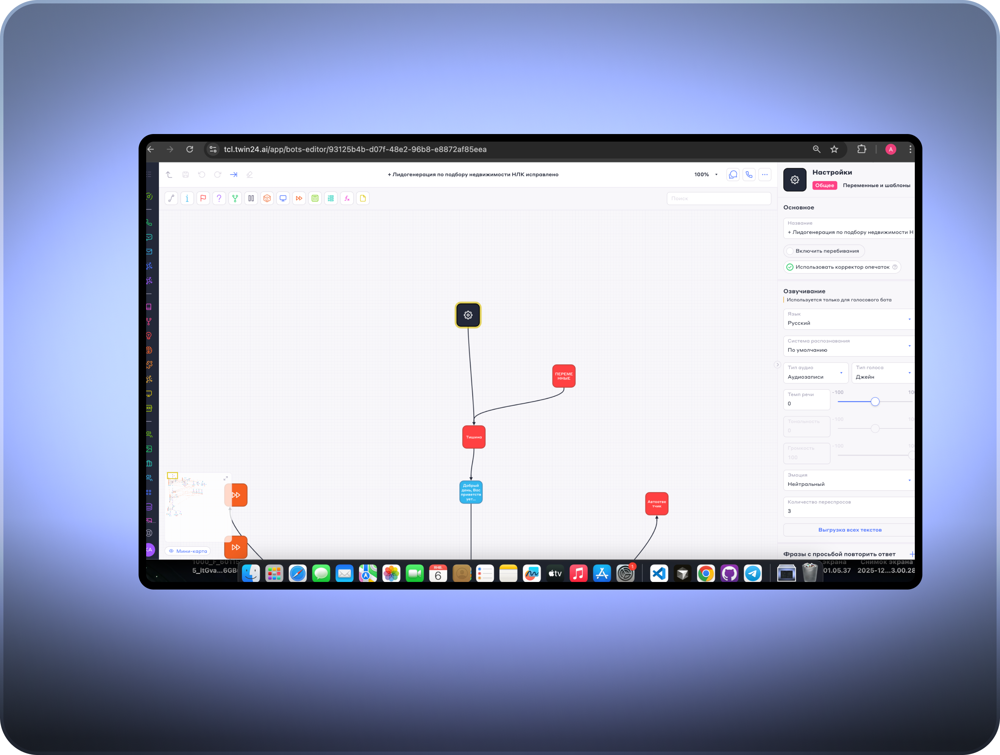

Голосовой бот на базе платформы Twin
 1 ШАГ
1 ШАГ
 2 ШАГ
2 ШАГ
 3 ШАГ
3 ШАГ
голосовой бот для лидогенерации на базе платформы Twin
Общее описание
Кейс реализован на базе платформы Twin, партнёром которой я являюсь. Платформа — это конструктор голосовых и чат-ботов, а также инструмент для автоматизированных звонков и лидогенерации, позволяющий быстро запускать ботов под конкретные бизнес-задачи.
В рамках кейса был разработан и запущен голосовой бот для лидогенерации для студии маникюра: привлечение новых гостей, запись на первый визит и подбор услуги или мастера. Дополнительно платформа позволяет реализовывать напоминания о визитах, сбор отзывов и маркетинговые кампании для увеличения повторных продаж и лояльности клиентов.
Обзвоны для студии маникюра на платформе Twin.
Платформа Twin — конструктор голосовых и чат-ботов, а также инструмент для автоматизированных звонков и лидогенерации.
Я являюсь партнёром платформы Twin и самостоятельно проектировала, настраивала и запускала бота под бизнес-задачи студии маникюра.
Привлечение новых гостей, запись на первый визит и консультацию по услугам, а также повышение качества сервиса.
Автоматизированный голосовой опрос с использованием телефонных звонков.
Оценка NPS, комментарии клиентов, показатели дозвона и завершённости опроса.
Регулярную обратную связь, снижение ручной нагрузки на персонал и прозрачные метрики удовлетворённости клиентов.
Да, сценарии легко адаптируются под другие студии маникюра, beauty-точки или сети без доработки кода.
Лидогенерация, запись на услуги, возврат «спящих» клиентов, напоминания о визитах и информирование об акциях.
Да, благодаря low-code подходу и быстрому запуску без сложной разработки.
голосовой бот для лидогенерации на базе платформы Twin
